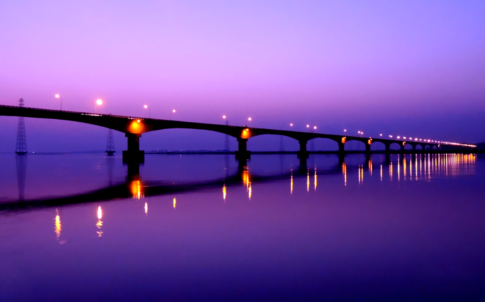

Lush green tea gardens, picturesque landscapes
and endless paddy fields framed by the snow-clad
Himalayas, all come together to make the beautiful
city of Tezpur one of the most explored tourist
destinations in Assam. Fringed by the feisty
Brahmaputra river, Tezpur, in Sonitpur district,
is considered to be Assam's oldest city. Straddling
the state of Arunachal Pradesh and Assam, Tezpur is
surrounded by some of the most exquisite scenic
sites in India.

About Tour
Day 1:
Kanaklata Memorial Park
Chitralekha Udyan
Agnigarh View Point
Bamuni Hills
Kolia Bhomora Setu